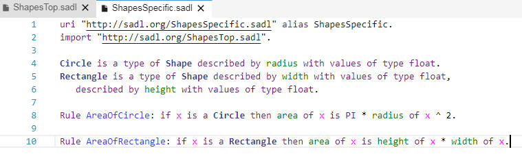

Web SADL is a set of services that allow a SADL IDE to be instantiated in a Web browser. The functionality mirrors that of the Eclipse-based SADL IDE. Web SADL features include the following.
Authoring of SADL model files in a feature-rich text editor.
Live model instance validation.
Generation (OWL, N3, and NT) based on valid SADL models.
LS based semantic highlighting.
Navigation between the SADL model elements.
Content assist in the SADL editors.
Downloading and managing external SADL resources into the workspace.
Preferences.
Testing and querying SADL models.
Reviewing the output of any SADL model via Ask and Test statements.
Collaboration with the Theia Git extension.
This document is primarily about using Web SADL in a browser. For more information about setting up the Web SADL backend services, please see Web SADL Backend.
The Web SADL client will run in a Web browser. Chrome is recommended and it the browser that has been used in testing.
Connect to the Web SADL backed by entering the service URL of the form "http://<host>:<port>, e.g.,
The result should be a browser tab with menu items across the top and down the left and right sides as shown below.
To create a new SADL project, click on "Files" on the left-side menu to show the file system. Select a folder, e.g., "project", and right-click to obtain a popup menu. Note that the Files view can be made invisible by clicking on "Files" again.
Click on "New SADL Project" to create a SADL project. Name your project as requested. For purposes of this tutorial, you might want to name it "Shapes".
Note that the "settings.json" file contains the project settings and can be opened in an editor by double-clicking on the name or by right-clicking for a popup menu.
Now that we have a SADL project, we can begin to create SADL model files. Right-click on the project name (e.g., "Shapes") and select "New File". In the naming dialog give the file a name ending in ".sadl", e.g., "ShapesTop.sadl". The result will be a new SADL model file opened in a SADL editor window. This editor window will have content assist, error and warning markers, hyperlinking, etc., just like the Eclipse-based SADL IDE. Holding down the Control key and pressing the space bar activates content assistance.
Pressing the Enter key will insert the selected suggestion into the model file.
Defining a class "Shape" which is in the domain of property "area" with range "float" results in the following state of the project.
Note that an "OwlModels" folder has been created containing the translated model for our newly created model as well as several other files. The "ImplicitModel" folder contains the definition of the built-in functions supported by the selected reasoner. It also contains the SadlImplicitModel. These two editable files, along with SadlBaseModel.owl in the OwlModels folder, are implicitly imported by every SADL model.
To complete our simple demo project, we create a second SADL model file which imports the first and defines Circle and Rectangle as subclasses of Shape with defining properties. Finally we add a couple of rules to compute the area of these types of Shape.

We can test our model by creating a SADL file which contains some instances of Shape and some tests to verify that the rules compute correct areas.
By clicking on the "SADL" top menu item and selecting "Test Model", with the editor focus on TestShapes.sadl, we can run inference. The results are displayed in the Output window and include the test results.

Git can be set up on the server machine so that it uses the config information (e.g., user) from a local git repo which is the current directory or a parent thereof.
The "Git" tab on the left allows adding files to tracking and committing changes, as well as comparing a changed file with ??
A terminal window opened up in the browser interface allows other git operations such as cloning, pushing.
The Git configuration on the server should be done by, so that the config file is in the same user home folder, the same user who starts the backend.
Any one who has access to the service through the browser interface can execute commands in the terminal window and any git actions affecting a remote repo will be done in the name of the local user of the current local git repo.
Web SADL has been exercised on both OS X and Windows 10 (VMWare).
- The source code is ready for review within a PR [1]. I have rebased the branch from the development. As always, the source has an EPL v 1.0 license.
- I have also published a new version of the Theia SADL extension [2].
- The Web SADL application is publicly available [3] as a Docker image.
- Authoring of SADL model files in a feature-rich text editor.
- Live model instance validation.
- Generation (OWL, N3, and NT) based on valid SADL models.
- LS based semantic highlighting.
- Navigation between the SADL model elements.
- Content assist in the SADL editors.
- Downloading and managing external SADL resources into the workspace.
- Preferences.
- Testing and querying SADL models.
- Reviewing the output of any SADL model via Ask and Test statements.
- Collaboration with the Theia Git extension.
(Although this section contains documentation about the Windows version, it was tested and verified on both OS X and Windows platforms.)
- Hyper-V [4] must be enabled on the host Windows. Otherwise, Docker cannot run Linux-based containers. (Either it is already available on your Windows, or your system administrator can help to turn this on.)
- A free/community Docker ID (account).
- The Docker image comes with Git (2.13.7), but it is not configured. It requires manual configuration [5].
- Download Docker for Windows from the Docker Store[6]. I used the "Edge" release [7] on my Windows 10 image. Once I have enabled Hyper-V, I had to run the installer, log in with my Docker ID and start the Web SADL Docker image.
- Pull the latest Web SADL image:
docker pull theiaide/sadl
- Run the Web SADL image (from the current working directory):
- There is no support for user specific access-control.
- The LS-based semantic highlighting works only on current workspace resources. What does that mean? When you open any historical revision of a SADL model file (with the Theia Git extension), coloring is not available. The coloring is also not available in diff editors when comparing the current state of a SADL model file with any other historical revisions.
- Time to time, a native file change event does not arrive from the Docker container to the Theia backend. What does that mean? It might happen that after downloading external SADL resources, you have to refresh your browser (Ctrl/Cmd+R) to get rid of the compiler errors.
- Publishing a new version of Web SADL is not automated. What does that mean? If you change something relevant in the SADL Java code, a new version of Theia SADL extension has to be published manually based on the documentation [8]. Finally, a new Docker image has to be released as well based on the new extension.
- There are CIs on the development branch of sadlos2/sadl3.
- Some general documentation on Theia as an IDE (with the Git integration) is available [9] as part of Gitpod.
[1]: https://github.com/crapo/sadlos2/pull/296/
[2]: https://www.npmjs.com/package/sadl-extension/
[3]: https://hub.docker.com/r/theiaide/sadl/
[4]: https://docs.microsoft.com/en-us/virtualization/hyper-v-on-windows/quick-start/enable-hyper-v/
[5]: https://github.com/theia-ide/theia/issues/1037#issuecomment-376180725/
[6]: https://store.docker.com/editions/community/docker-ce-desktop-windows/
[7]: https://download.docker.com/win/edge/Docker%20for%20Windows%20Installer.exe/
[8]: https://www.npmjs.com/package/sadl-extension#release-engineering/
[9]: https://docs.gitpod.io/50_IDE.html/